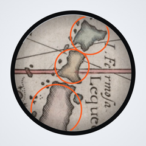

Old Maps Decoded
Old Maps Decoded is a YouTube channel about historical maps. Every episode takes one real map, a scan from a library or archive, and asks what it gets wrong and why.
No AI-generated images and no made-up maps: every map on screen is a real document, named with its archive and catalogue number. When the sources disagree, or nothing survives to explain a choice, the video says so. Narration uses a synthetic voice.
Latest episode
Why Europe Drew Taiwan as Three Islands: in 1596, Europe's best map of Asia split one island into three. The episode reads that error off the original map and follows it to the people who finally drew Taiwan as one island.
About the Old Maps Uploader
"Old Maps Uploader" is the channel's own publishing tool. It uploads the channel's finished episodes, thumbnails and captions to this channel only. See the privacy policy and terms.